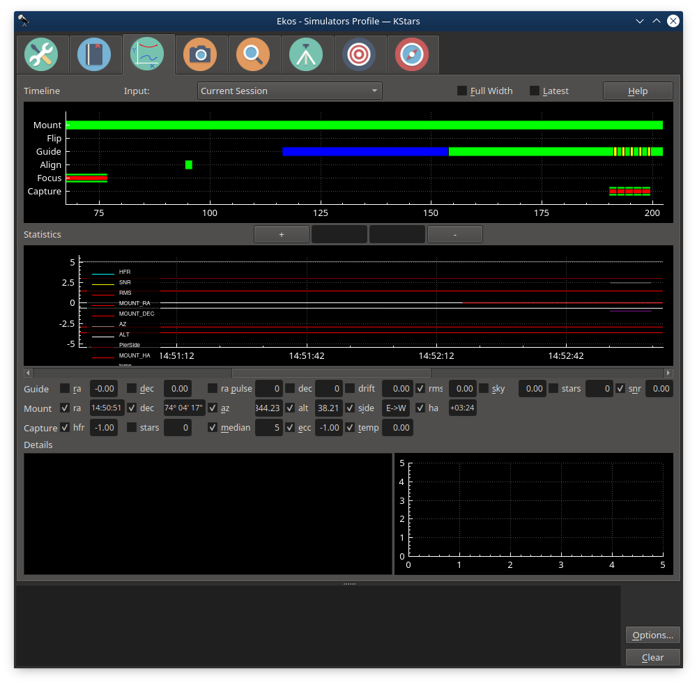

Analyze
Introduction

The Analyze Module records and displays what happened in an imaging session. That is, it does not control any if your imaging, but rather reviews what occurred. Sessions are stored in an analyze folder, a sister folder to the main logging folder. The .analyze files written there can be loaded into the Analyze tab to be viewed. Analyze also can display data from the current imaging session.
There are two main graphs, Timeline and Stats. They are coordinated—they always display the same time interval from the Ekos session, though the x-axis of the Timeline shows seconds elapsed from the start of the log, and Stats shows clock time. The x-axis can be zoomed in and out with the +/- button, mouse wheel, as well as with standard keyboard shortcuts (eg. zoom-in == Ctrl +) The x-axis can be panned with the scroll bar as well as with the left and right arrow keys. You can view your current imaging session, or review old sessions by loading .analyze files using the Input dropdown. Checking Full Width displays all the data, and Latest displays the most recent data (you can control the width by zooming).
Timeline
Timeline shows the major Ekos processes, and when they were active. For instance, the Capture line shows when images were taken (green sections) and when imaging was aborted (red sections). Clicking on a green section gives information about that image, and double clicking on one brings up the image taken then in a fitsviewer, if it is available.
If you have moved your captured images, you can set alternate directory in the input menu to a directory which is the base of part of the original file path.
Clicking on a Focus segment shows focus session information and displays up the position vs HFR measurements from that session. Clicking on a Guider segment shows a drift plot from that session, (if it's guiding) and the session's RMS statistics. Other timelines show status information when clicked.
Statistics
A variety of statistics can be displayed on the Stats graph. There are too many for all to be shown in a readable way, so select among them with the checkboxes. A reasonable way to start might be to use rms, snr (using the internal guider with SEP Multistar), and hfr (if you have auto-compute HFR in the FITS options). Experiment with others. The axis shown (0-5) is appropriate only for ra/dec error, drift, rms, pulses, and hfr. These may be y-axis scaled (awkwardly) using the mouse wheel, but the other graphs cannot be scaled. To reset y-axis zooming, right-click on the Stats plot. Clicking on the graph fills in the values of the displayed statistics. This graph is zoomed and panned horizontally in coordination with the timeline.